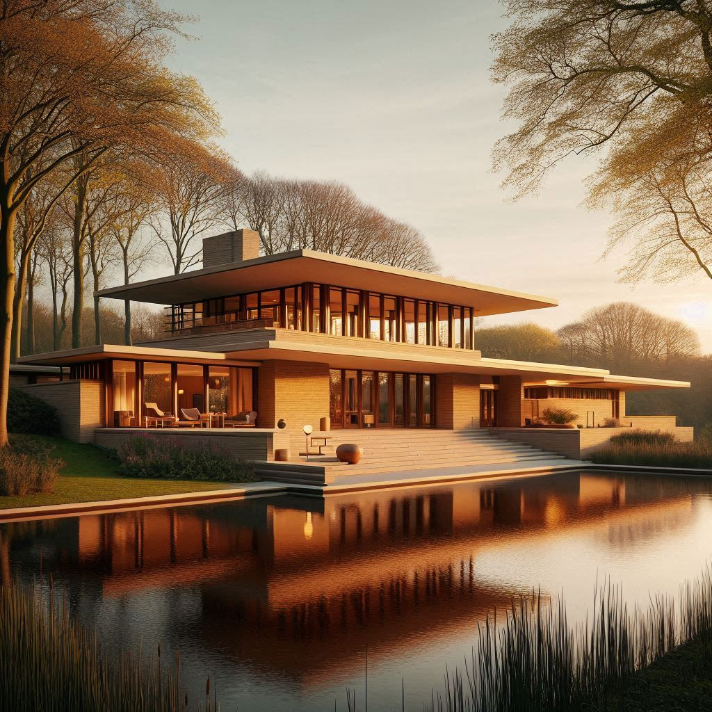
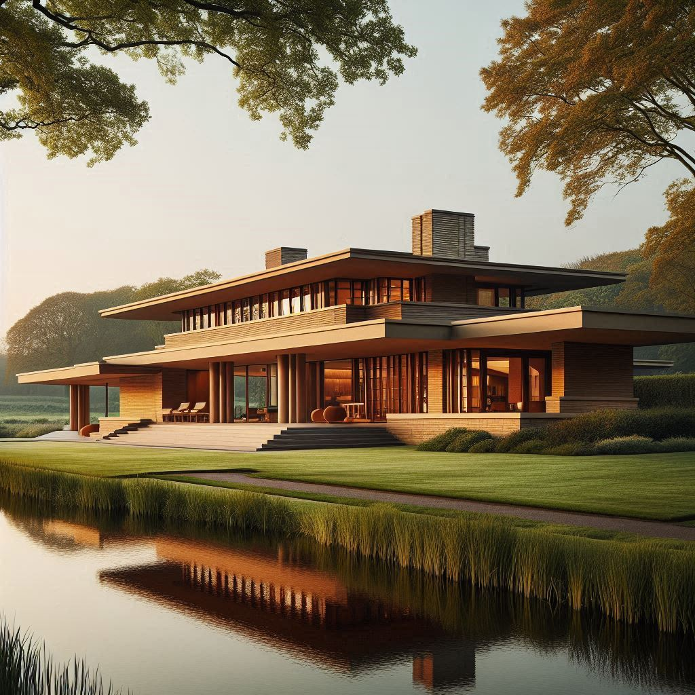
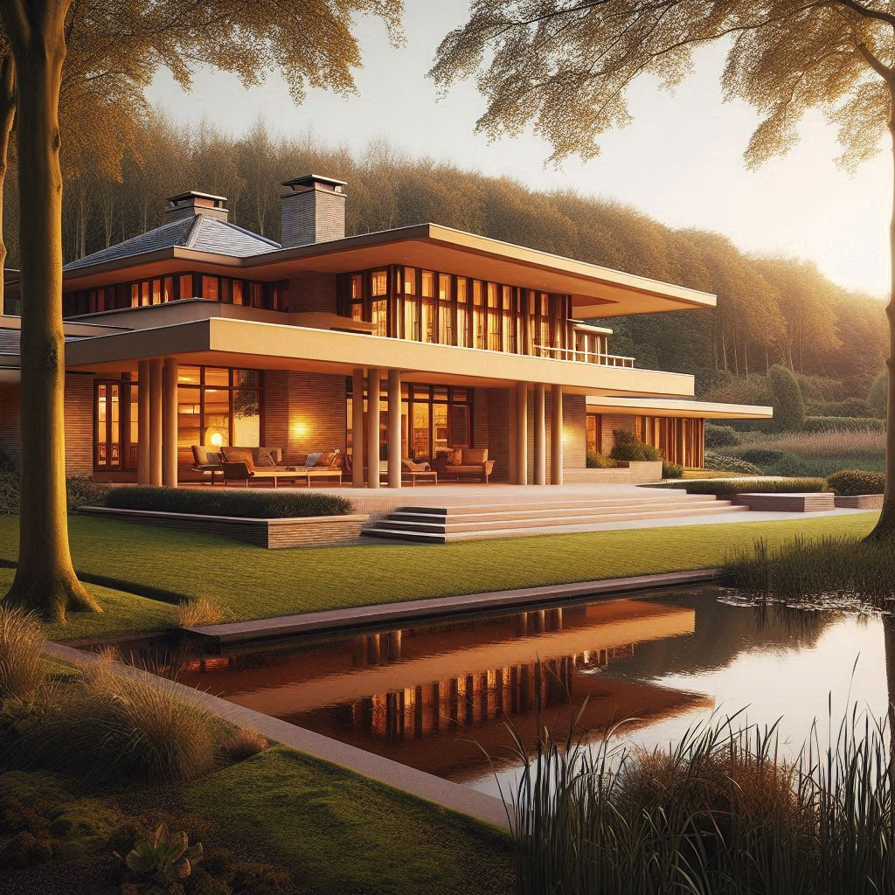
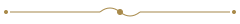
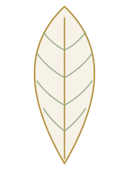
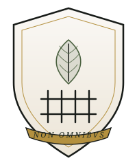

Quote Weekend
"Landgoed Nietvooriedereen is wat u overhoudt als u álles heeft: een kavel, een hek, en het stille genoegen dat uw zwager níet in aanmerking komt."
★ ★ ★ ★ ★
Op het snijvlak van exclusiviteit, uitsluiting en opvallend veel tuin ligt Landgoed Nietvooriedereen — voor wie hoort bij de enkelen die er thuishoren.
Bekijk de kavels (als u mag)Landgoed Nietvooriedereen is een buitengewoon woongebied voor mensen die graag buitengewoon wonen — en vooral: buitengewoon weinig buren zien. In een prachtige omgeving aan het water, omringd door een drie meter hoge beukenhaag, bouwt u samen met uw eigen aannemer (en onze ballotagecommissie) een woning in een stijl met allure op een royale kavel van minimaal 20.000 m². Want wie écht ruimtelijk wil wonen, telt geen vierkante meters — die telt buurmannen.
Bos, water en uitzicht op de villa van iemand die óók de ballotage heeft doorstaan. Herten grazen vrij. Postbezorgers worden vriendelijk tegengehouden bij de slagboom.
Vrijheid om te bouwen wat u wilt — mits het past binnen het 180 pagina's tellende beeldkwaliteitsplan, goedgekeurd door de Vereniging van Eigenaren en de rechterbuurman.
Met de auto zit u zo op de snelweg. Met het OV zit u zo nergens, want dat hebben we eruit gehouden. Dat bevordert de rust én de selectie.
Onze ballotagecommissie heeft een duidelijke voorkeur voor horizontale lijnen, natuurlijke materialen en daken die verder uitsteken dan uw geduld met de buren. Ter inspiratie — en ter ontmoediging van wie denkt aan een kubuswoning met een trampoline op het dak — een kleine impressie van wat hier past.



Impressies. Werkelijke villa's kunnen afwijken — en zullen u afwijzen indien niet passend binnen het beeldkwaliteitsplan.
Alle kavels zijn minimaal 20.000 m² en grenzen aan water, bos, of een ander soort discretie. Voor de volledige kaart vragen wij u eerst het aanmeldformulier én drie referentiebrieven in te dienen.
| Kavel | Oppervlakte | Ligging | Vanaf | Status |
|---|---|---|---|---|
| A · De Voorname | 22.500 m² | Aan het Eesermeer | € 3.950.000 | Vergeven |
| B · De Afgeschermde | 28.000 m² | Bosrand, geen pad | € 4.275.000 | In ballotage |
| C · De Wij-Bekijken-U-Eerst | 34.000 m² | Bovenop de Woldberg | Op aanvraag | Op uitnodiging |
| D · De Niet Voor U | 41.000 m² | Ergens daar | — | Echt niet |

Toelating tot het landgoed is geen recht — het is een gunst, liefst erfelijk. Onze commissie neemt u stap voor stap door een proces dat even grondig is als ontmoedigend.
Alles wat u nodig heeft, binnen handbereik — zolang die hand tot de juiste familie behoort.
Een sfeervolle plek voor ontmoetingen van maximaal twee huishoudens tegelijk, op gepaste onderlinge distantie.
Spreekt uitsluitend Frans en knikt alleen naar wie hij herkent. Herten zijn bij naam bekend.
Zonder paarden. Dat bevordert de rust. Tevens tennisbaan, mits u de juiste tennisclub heeft.
Herkent uw auto, uw merk, en desgewenst uw status. Postbezorgers worden beleefd bij de slagboom afgewezen.
Eikenhouten lambrisering, 6.000 gelezen boeken, 40.000 ongelezen boeken. Stilte is gewaarborgd door gebrek aan bezoekers.
Voor uw sloep, uw zeilboot, of — wat wij het liefste zien — helemaal niets. Leegte heeft hier allure.
Daarna mag u zelf graven. Dat houdt de toevloed van thuiswerkende consultants binnen de perken.
Regelt vrijwel alles — behalve contact met de buren. Dat blijft een persoonlijke verantwoordelijkheid, liefst vermeden.
"Alles is hier in de buurt, behalve andere mensen. Met de fiets bereikbaar — mits u een eigen fietspad aanlegt. Heerlijk."
"Wij hebben ervoor gekozen om biobased te bouwen: uitsluitend met materialen waar niemand anders toegang toe heeft."
"Je hebt hier alle ruimte om zowel binnen als buiten te leven. En om mensen buiten te laten staan."
"Landgoed Nietvooriedereen is wat u overhoudt als u álles heeft: een kavel, een hek, en het stille genoegen dat uw zwager níet in aanmerking komt."
"Een meesterlijk gecomponeerd stukje Nederland waar horizontale daklijnen en verticale statusindicatoren in perfecte harmonie samenkomen."
"De hoogte van de haag overtreft ieder vergelijkbaar landgoed in de Benelux. Hier wonen mensen die niet gezien willen worden — en dat lukt voortreffelijk."
Nee.
De kinderen hebben 41.000 m² tot hun beschikking. Dat is de speeltuin.
Dat kunt u proberen. De commissie zal de koper vervolgens afwijzen, waarna u alsnog eigenaar bent. Heeft u verder nog vragen?
Ja, zeven. Alle zeven zijn tinten "bosbruin". De achtste kleur ("diep beukenbruin") is voorbehouden aan kavel A.
Nee. Er is echter een concierge die boodschappen doet bij een slager die niet op internet te vinden is.
Dan heeft het systeem gewerkt zoals bedoeld. Wij wensen u veel succes elders — er zijn ook heel charmante nieuwbouwwijken.
Wij beoordelen niets. Wij noteren slechts.
Een landgoed van deze allure vraagt om zorg voor volgende generaties — bij voorkeur uw eigen. Wij zijn CO₂-neutraal zolang er niemand komt, en biodivers zolang de hertjes blijven meewerken. Rewilding is geen trend, maar een uitstekend excuus om paden af te sluiten.
Geothermie onder elke villa. Zonnepanelen uitsluitend aan de boszijde, want opvallen is niet chic.
Eigen helofytenfilter. Regenwater wordt hergebruikt voor de haag — die drie meter wordt ze niet vanzelf.
Vierentwintig vlindersoorten, elf soorten vleermuizen, en één buurman die hier nooit meer weg wil.
Biobased en lokaal gezaagd. Het hout komt uit het eigen bos; het bos komt weer terug, met geduld.


Het landgoed werd in 1887 gesticht door generaal b.d. jhr. dr. ir. Everhard van Dalen-tot-Wolde, een man van weinig woorden en opvallend veel land. Hij geloofde dat échte rust begint waar de openbare weg eindigt — en liet daar vervolgens een hek plaatsen.
Vier generaties later beheert de familie het landgoed nog altijd met dezelfde gezonde argwaan jegens nieuwkomers. Onze spreuk, Non Omnibus — "niet voor allen" — siert sinds 1902 het wapen, de briefpapieren en, indien nodig, de ingangspoort.
"Een landgoed is geen vastgoedinvestering. Het is een belofte aan uw voorouders dat u hun selectie-inspanningen niet in de wind zult slaan."
Stuurt u ons gerust een bericht — dan bekijken wij uw aanvraag, uw achternaam, uw golfhandicap en de achternaam van uw grootouders. Hoort u binnen zes tot acht weken niks? Dan was het helaas niet voor u.